Checkpoint 2
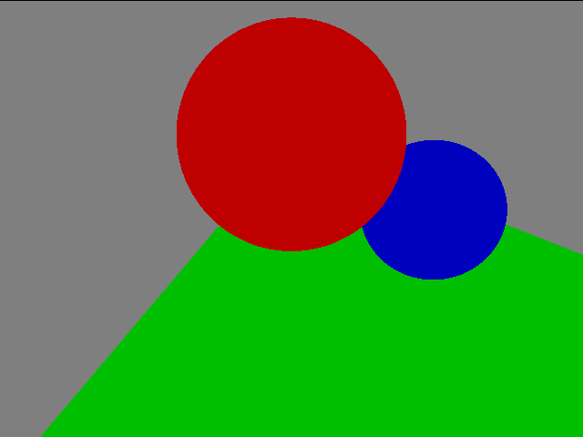
Here is the default scene
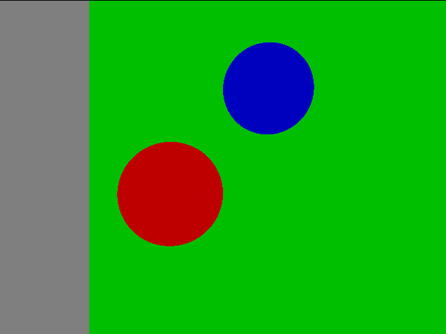
Here is the scene with the camera in a different position (Location{2,20,0}, Lookat{2,0,0})
Extra: Cylinder
This is a cylinder with no caps, although if you look at the shadows it's really half of a cylinder.
With the illumination on, the cylinder isn't lit correctly. There's probably an issue with the math.
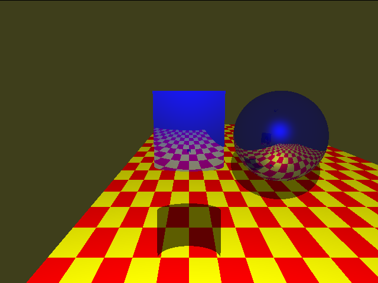
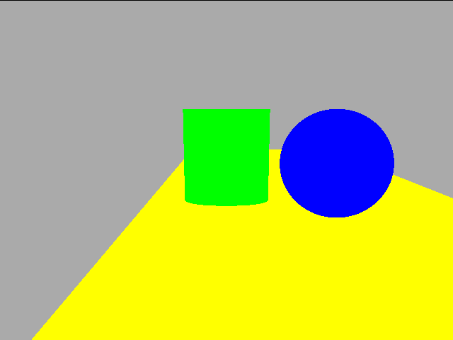
Checkpoint 3
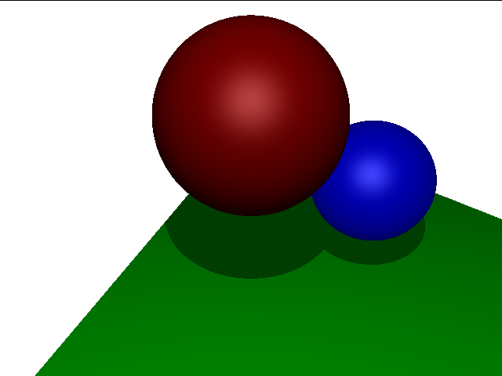
Extra: Blinn-Phong
Using Blinn-Phong for illumination. Specular highlights are huge.
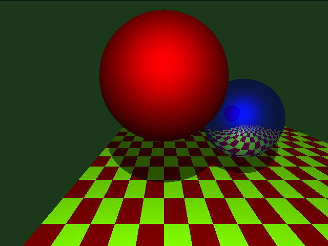
Extra: Multiple Light Sources
Using two light sources.
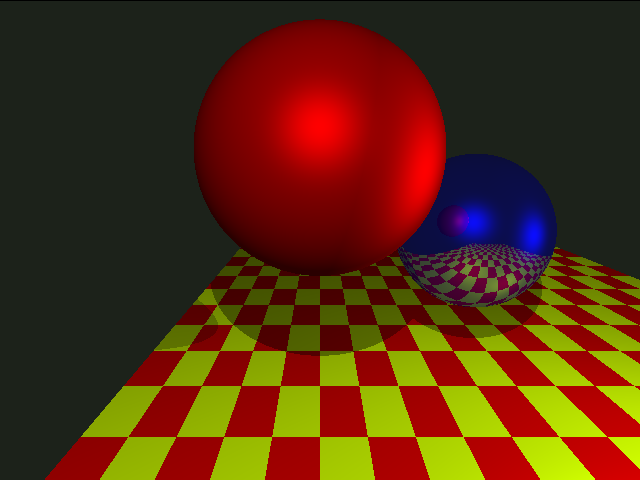
Checkpoint 4
Here is the scene with the floor textured. This might be bad,
but for the checkerboard to work properly, the first point given for
each triangle must be the vertex that isn't on the adjacent edge
(In this case, the top left vertex for the first tri, and the
bottom right for the second). Triangle vertices given counterclockwise.
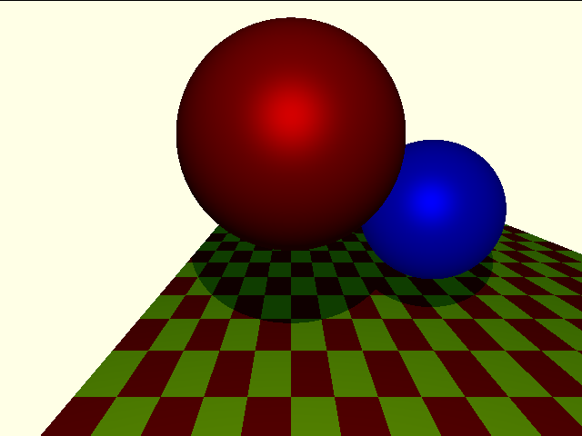
Extra: Procedural Textures
I implemented two procedural textures from here.
They are marble and wood respectively.
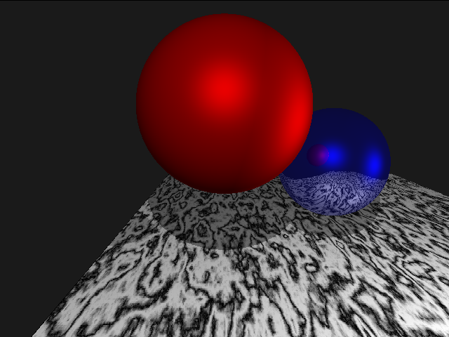
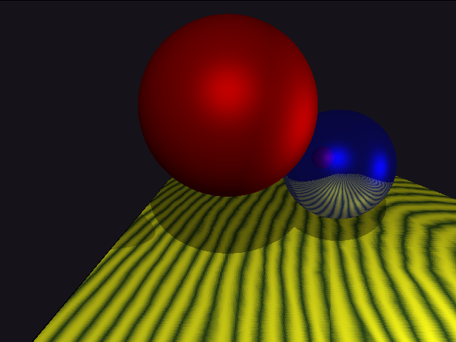
Checkpoint 5
The scene with one sphere that is reflective.
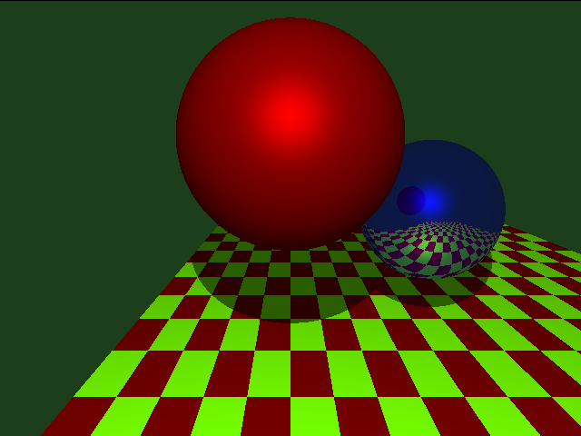
Checkpoint 6
The scene with one sphere that is translucent. This is using fresnel to get reflectivity as
well as refractivity. You can sort of see specular highlights from the two light sources.
It does look a bit off where the blue sphere is refracted. It seems like it is too far into
the translucent sphere.
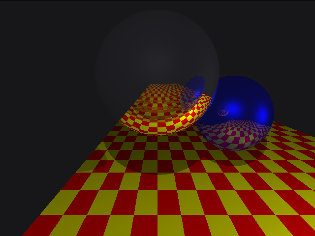